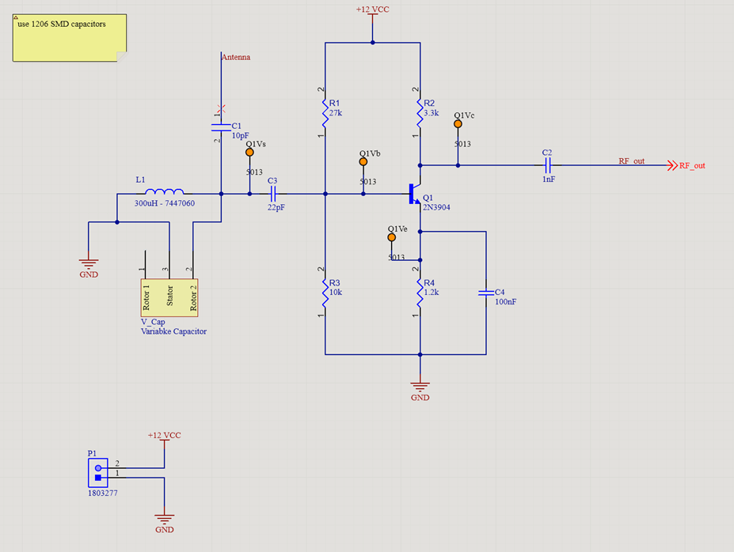
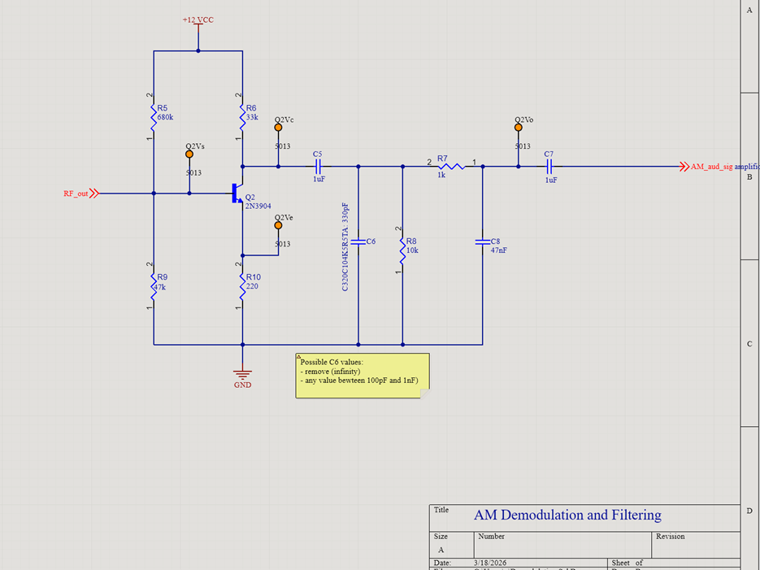
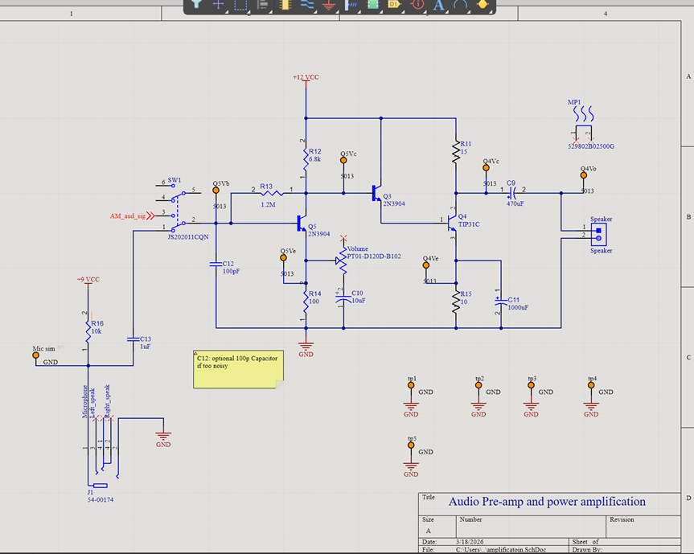
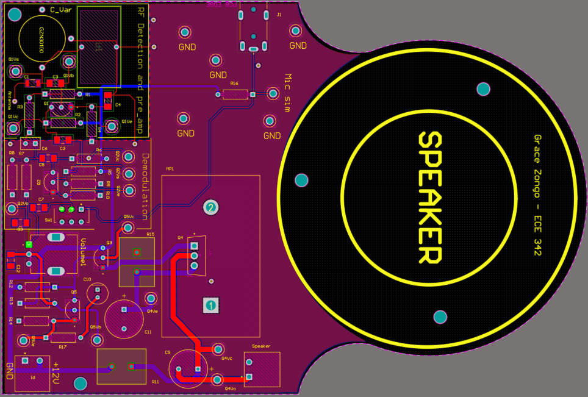
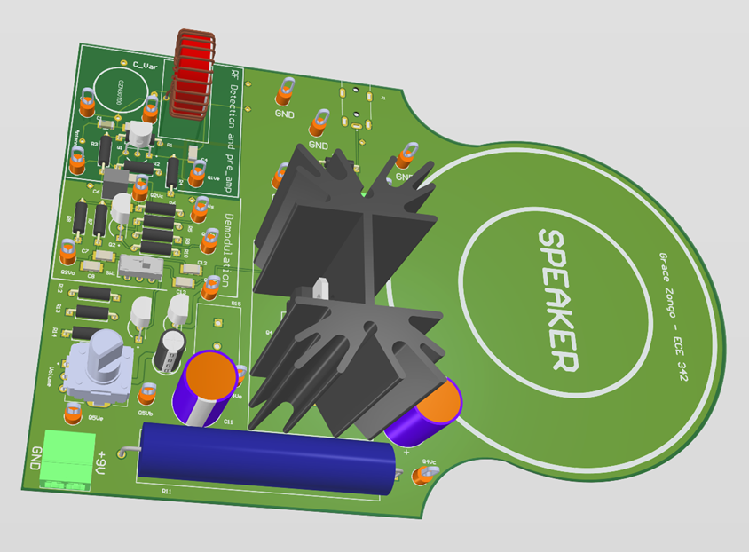
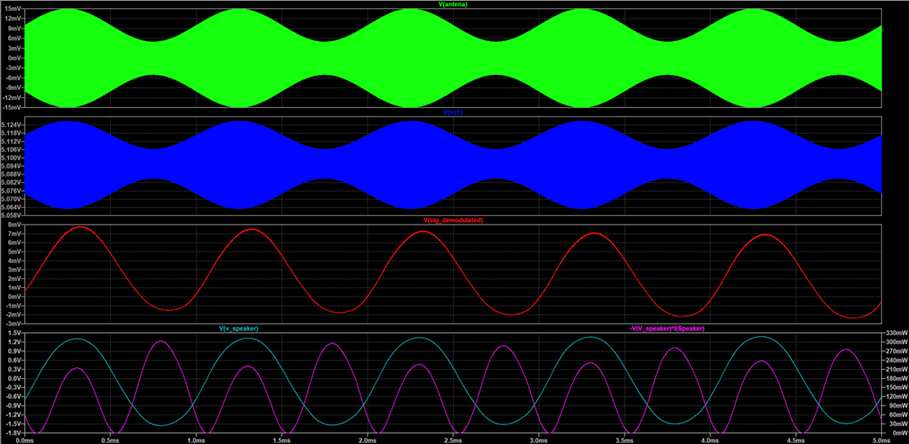

AM Radio Receiver – ECE 342
Overview
Designed and simulated a complete AM radio receiver with a microphone input option for ECE 342 (Spring 2026). The system takes a signal from an antenna, amplifies and selects an AM station, demodulates the audio, and drives an 8 Ω speaker through a Darlington power stage — all on a custom Altium PCB.
The design is organized into four cascaded stages: RF pre-amplifier → AM demodulator + LPF → audio pre-amplifier → Darlington power output. A DPDT slide switch allows toggling between the AM radio input and a 3.5 mm microphone jack.
Signal Chain
Stage 1
RF Detection & Pre-amp
2N3904 common-emitter + LC tank for station selection
Stage 2
AM Demodulation + LPF
2N3904 biased near cut-off for envelope detection + RC audio filter
Stage 3
Audio Pre-amp
2N3904 common-emitter with self-bias feedback (Rf = 1.2 MΩ)
Stage 4
Darlington Power Output
2N3904 driver + TIP31C output — drives 8 Ω speaker with heatsink
Stage 1 – RF Pre-amplifier (2N3904, Common Emitter)
An LC tank circuit (L = 300 µH, Cvar = 18–300 pF) selects the AM station by resonating at the desired carrier frequency. The 2N3904 is biased at IC ≈ 2.12 mA for linear amplification:
- VB = 3.24 V, VC = 5.0 V, VCE = 2.46 V (active region confirmed)
- R1 = 27 kΩ, R3 = 10 kΩ (voltage divider bias, R1 ≈ 2.83 × R3)
- R4 = 1.2 kΩ emitter degeneration; C4 = 100 nF bypass capacitor
- C2 = 1 nF output coupling; 1206 SMD capacitors throughout
Stage 2 – AM Demodulator + Low-pass Filter
The demodulator stage biases a second 2N3904 near cut-off (VB ≈ 0.77 V) to act as a half-wave rectifier, extracting the audio envelope from the AM carrier.
- R5 = 680 kΩ, R9 = 47 kΩ → VB ≈ 0.77 V (just above cut-off)
- C6 (330 pF, variable) + R8 = 10 kΩ: strips carrier, retains audio envelope
- R7 = 1 kΩ, C8 = 47 nF: final audio low-pass filter before next stage
- Reducing C6 increases gain; removing it maximizes gain at the cost of more carrier noise
Stage 3 – Audio Pre-amplifier (2N3904)
Self-biased common-emitter stage providing the bulk of voltage gain before the power transistor. A 1 kΩ potentiometer (volume control) sits between this stage and the output.
- Feedback resistor R13 = 1.2 MΩ sets bias: VC ≈ 6.4 V (≈ VCC/2 for max swing)
- IC ≈ 1 mA; R12 = 6.8 kΩ load; R14 = 100 Ω emitter resistor
- β = 200 assumed → IB = 5 µA, confirming active region operation
- C12 = 100 pF optional noise filter at base
Stage 4 – Darlington Power Output (2N3904 + TIP31C)
A Darlington pair (Q3 drives Q4) was chosen after a single common-emitter stage proved insufficient to drive an 8 Ω speaker. The configuration provides extremely high current gain (βtotal ≈ βQ3 × βQ4) with VBE,total = 2 × 0.7 V = 1.4 V.
- Q3: 2N3904 driver transistor
- Q4: TIP31C (100 V, 3 A) output transistor with TO-220 heatsink
- C9 = 470 µF output coupling; C11 = 1000 µF supply bypass
- R15 = 10 Ω emitter resistor on Q4 for stability
- Microphone input option via DPDT slide switch and 3.5 mm jack (J1)
Schematics & PCB






Images above correspond to: images/am-radio/ — add your exported screenshots there.
LTspice Simulation Results
The full signal chain was verified in LTspice using a transient analysis (.tran) and operating point check (.op).
Operating Point (confirmed active region for all transistors)
| Node | Transistor | IC | VCE | βDC |
|---|---|---|---|---|
| Q1 – RF pre-amp | 2N3904 | 2.09 mA | 2.58 V | 304 |
| Q2 – Demodulator | 2N3904 | 0.357 mA | 1.44 V | 230 |
| Q5 – Audio pre-amp | 2N3904 | 1.04 mA | 4.66 V | 311 |
| Q3 – Darlington driver | 2N3904 | 3.87 mA | 7.90 V | 319 |
| Q4 – Power output | TIP31C | 315 mA | 6.33 V | 81 |
Transient Simulation (signal path)
- Antenna input: AM-modulated signal ±15 mV (1 kHz audio on ~1 MHz carrier)
- After RF pre-amp: amplified RF signal riding on ~5.1 V DC bias
- Demodulated audio: clean ~8 mV peak recovered audio signal
- Speaker voltage: ±1.5 V swing → ~330 mW peak into 8 Ω
Design Notes & Key Decisions
- RF pre-amp added: downstream stages alone produced insufficient gain to drive the 8 Ω speaker — adding the LC-tuned common-emitter stage resolved this.
- Darlington pair: a single common-emitter output stage lacked current drive; the Q3 (2N3904) + Q4 (TIP31C) Darlington gives βtotal ≈ 25,000+, enabling clean speaker drive.
- Ground plane clearance: ground pours were removed around the LC tank on the PCB to prevent capacitive coupling that would inject noise into the tuned circuit.
- C6 trade-off: lower capacitance on the demodulator filter increases audio gain but allows more carrier ripple through — chosen value (330 pF) balances both.
- Microphone option: a DPDT slide switch routes either the AM demodulated signal or a microphone input (biased via R16 = 10 kΩ, +9 V) into the audio pre-amp stage.
- Test points: 19 orange 5013 test point markers placed throughout the PCB for each stage's key nodes.